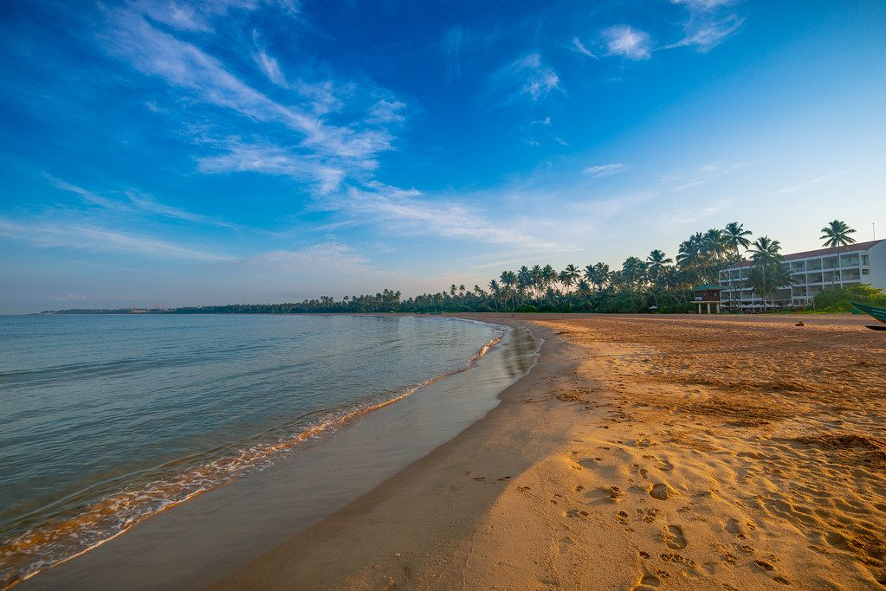
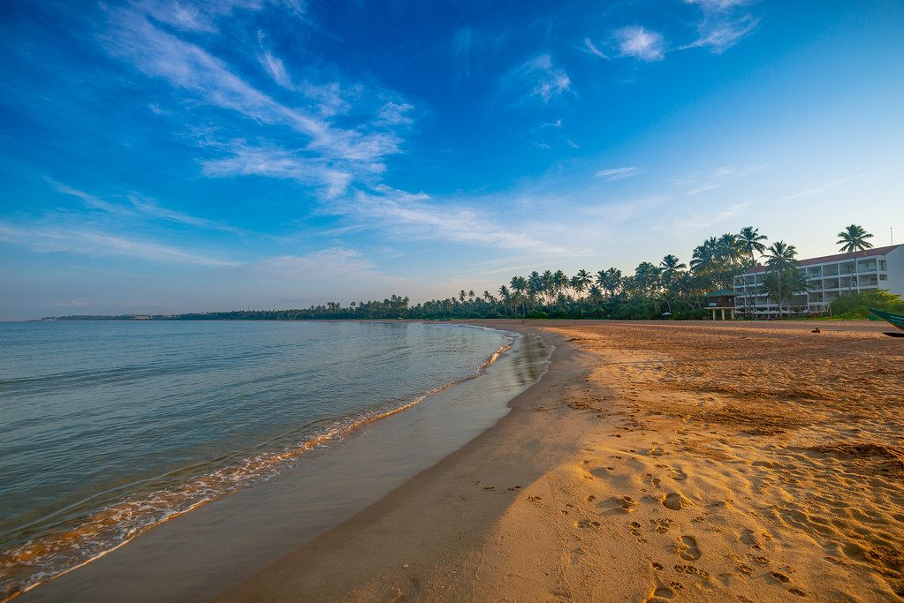

RIU Ahungalla is a luxury beachfront resort located on the southwest coast of Sri Lanka, offering a serene and relaxing environment for its guests. The resort is situated along the beautiful stretch of Ahungalla Beach, providing stunning views of the Indian Ocean. The property is part of the well-known RIU Hotels & Resorts chain, which is famous for its all-inclusive services.
The resort features spacious, modern rooms equipped with a variety of amenities to ensure comfort. Guests can enjoy multiple dining options, including international and local cuisines, along with bars offering refreshing drinks. The hotel also boasts various leisure facilities, such as an outdoor pool, fitness center, spa, and water sports activities.
Additionally, RIU Ahungalla has a contemporary design with a tropical touch, blending luxury with the natural beauty of its surroundings. The hotel emphasizes relaxation and enjoyment, providing an ideal setting for couples, families, and solo travelers alike.
For entertainment, the resort offers live music, themed events, and excursions to explore the local area. Its prime location allows guests to experience the rich culture, history, and nature of Sri Lanka.

 
